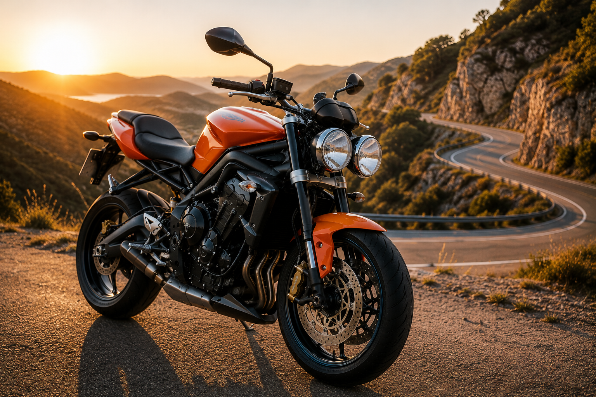
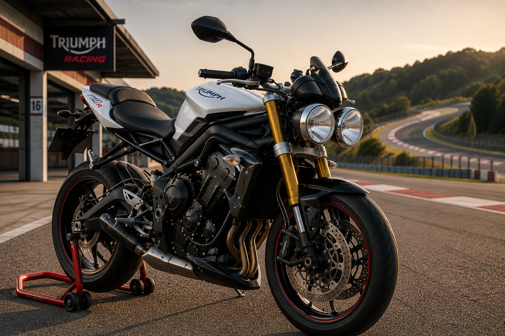
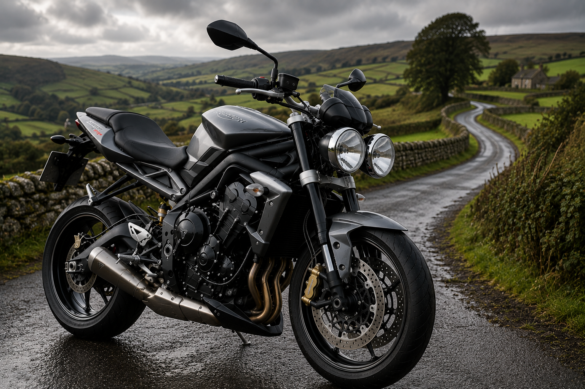
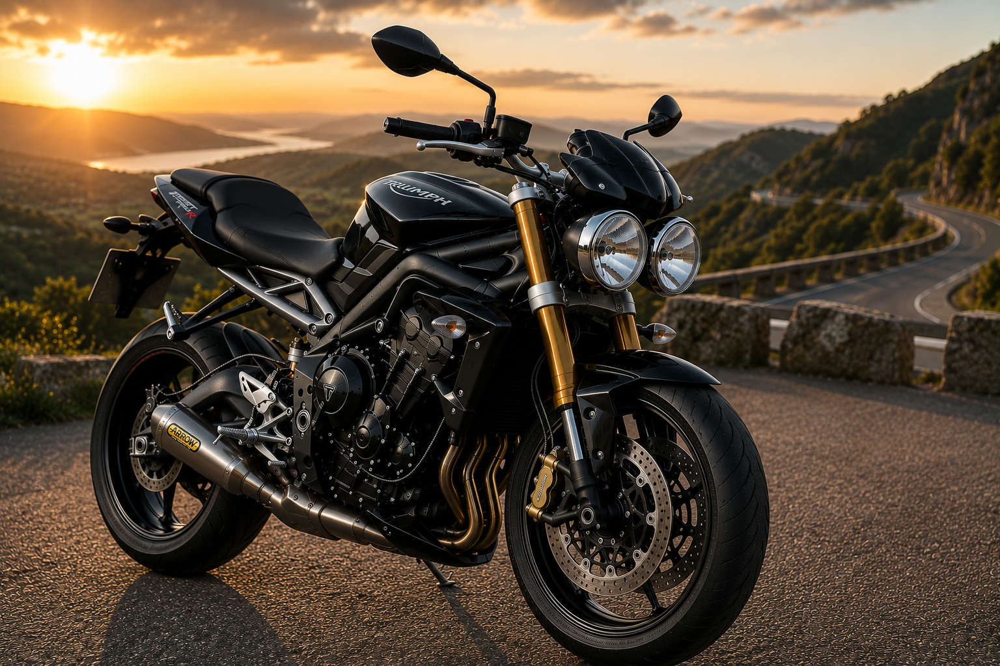
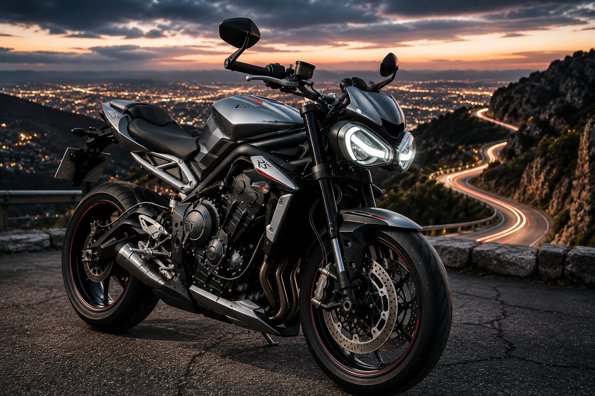
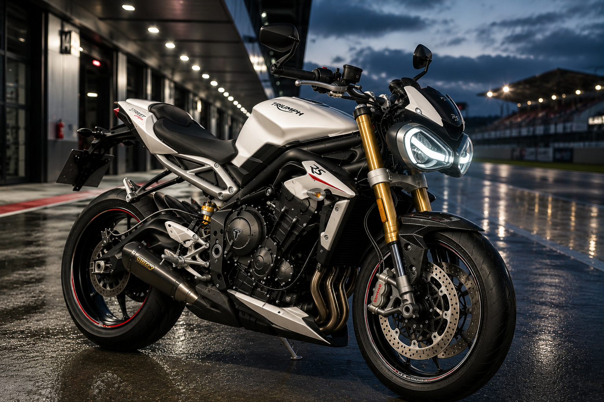
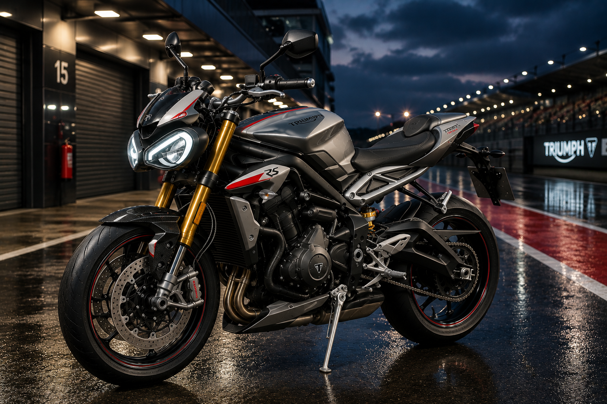
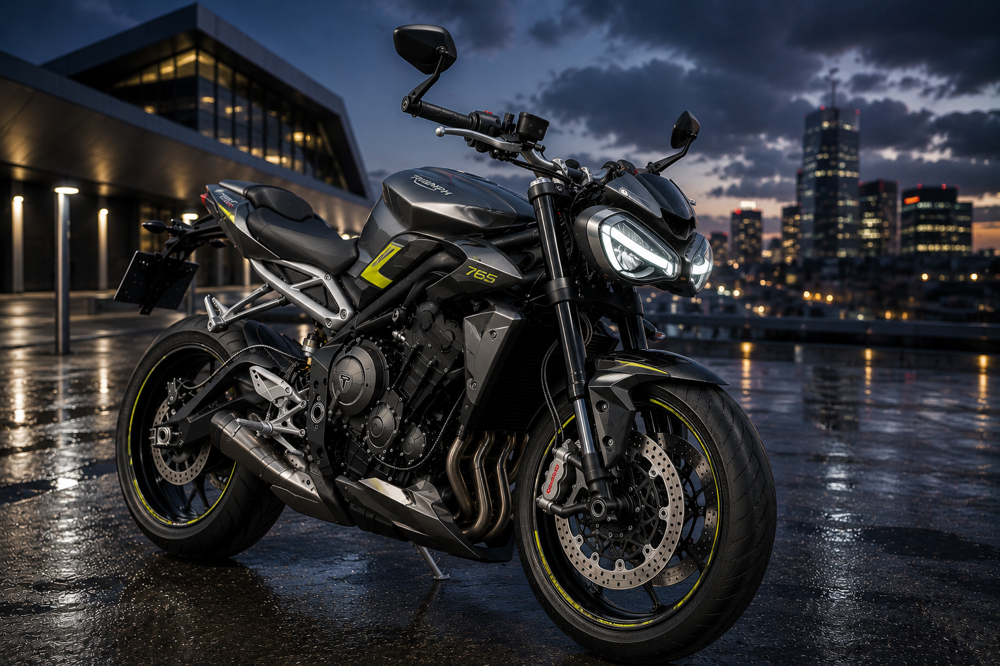
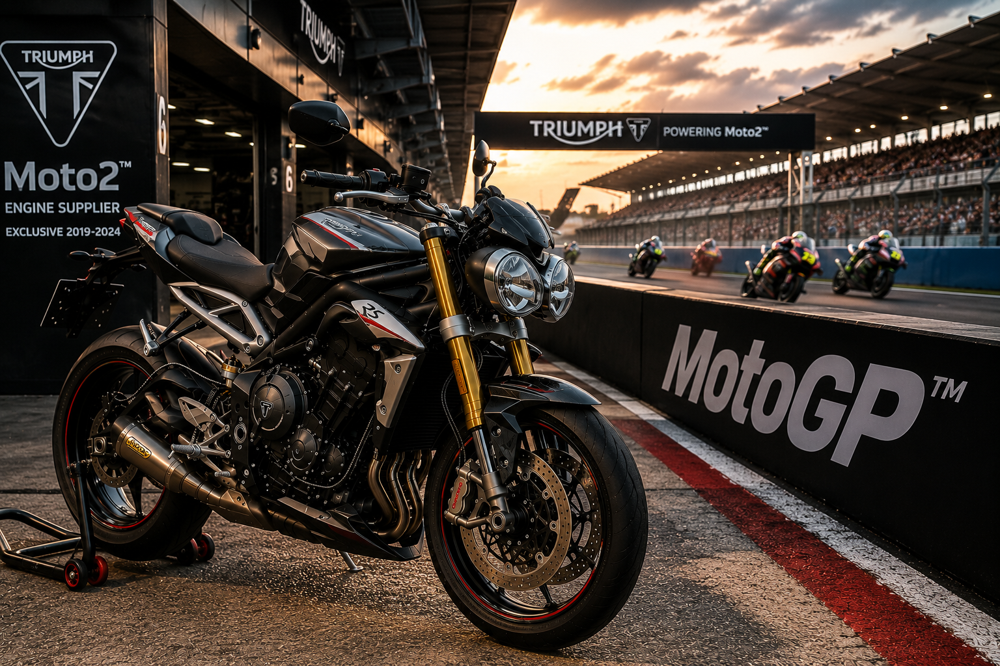

La Genèse — Née du Daytona 675
Quand la sportive devient naked
Pour comprendre la Street Triple, il faut revenir au Daytona 675, lancé
en 2006. Cette supersportive trois cylindres avait stupéfié le monde de la moto avec
son moteur d'exception — compact, léger, développant 123 chevaux dans un bloc ridiculement
petit, et produisant cette sonorité unique à mi-chemin entre le bicylindre généreux et le
quatre cylindres aigu.
Chez Triumph, les ingénieurs regardent ce moteur et voient immédiatement une opportunité.
Que se passerait-il si on prenait cette mécanique extraordinaire, qu'on lui retirait
le carénage de course, qu'on relevait le guidon, qu'on allégeait encore le châssis et
qu'on livrait le tout dans un package plus accessible ? La réponse allait s'appeler
Street Triple.
Le projet démarre en parallèle du développement du Daytona. L'idée : créer une naked
sportive de moyenne cylindrée, accessible en terme de puissance et de tarif, mais absolument
sans compromis sur les sensations. Une moto pour la rue — Street — avec le
caractère du triple — Triple. Le nom dit tout, encore une fois.
2007 — La Street Triple 675 : La Grande Surprise
Le monde découvre sa nouvelle favorite

En septembre 2007, au salon de Milan EICMA, Triumph dévoile la
Street Triple 675. L'accueil est immédiat et enthousiaste. Les journalistes
présents comprennent en quelques secondes ce qu'ils ont devant eux : quelque chose de
différent, de frais, d'immédiatement désirable.
Le moteur est directement hérité du Daytona 675, mais légèrement revu pour favoriser
le couple à bas et mi-régime plutôt que la puissance maximale. Il développe
106 chevaux — volontairement bridé par rapport aux 123 ch du Daytona
pour des raisons d'assurances et d'accessibilité — mais surtout un couple disponible,
généreux, présent dès 3 500 tr/min. En ville, dans les virages, sur
les nationales, ce moteur est une révélation permanente.
La ligne est une réussite absolue. Triumph ose un design audacieux et immédiatement
reconnaissable : deux grands phares ronds, inspirés de la Speed Triple mais plus expressifs
encore, un nez court et relevé qui donne à la moto un air espiègle et agressif à la fois.
La selle est plate, basse, le réservoir compact, la queue relevée. Tout concourt à donner
une impression de légèreté et de dynamisme même à l'arrêt.
Le poids à vide est de 167 kg — une légèreté remarquable pour une moto
de cette puissance. Associé aux 106 chevaux du trois cylindres, ce rapport poids/puissance
donne des performances qui feraient rougir des sportives bien plus puissantes et plus chères.
La Street Triple abat le 0 à 100 km/h en moins de 3,8 secondes et dépasse
les 220 km/h en vitesse de pointe.
Mais les chiffres, encore une fois, ne disent pas tout. Ce qui frappe les premiers pilotes
d'essai, c'est la fluidité, l'équilibre, la
communication de cette moto. Elle répond au moindre mouvement du poignet.
Elle pivote dans les virages avec une légèreté déconcertante. Elle transmet chaque
information du bitume à travers les poignées et les repose-pieds. On dirait qu'elle lit
dans vos pensées.
La presse moto mondiale s'emballe. Motorcycle News lui décerne le titre de
"Moto de l'Année 2008". Les tests comparatifs voient la Street Triple
dominer toutes les naked de sa catégorie. Les commandes explosent partout en Europe,
en Australie, aux États-Unis. Triumph n'arrive pas à produire assez vite pour satisfaire
la demande. C'est un succès commercial et critique sans précédent pour la marque.
2008 — La Street Triple R : La Version Circuit
Plus d'équipement, plus de sensations

Un an seulement après le lancement de la version standard, Triumph dévoile en
2008 la variante Street Triple R. Le principe est
simple : reprendre la recette gagnante de la Street Triple et y greffer un équipement
digne d'une machine de circuit.
La différence majeure réside dans les suspensions. La R reçoit une fourche inversée
Kayaba de 41 mm entièrement réglable en compression et détente, ainsi
qu'un mono-amortisseur arrière également réglable. Par rapport à la version standard,
le gain en précision et en communication est immédiat. La R plonge dans les virages
avec encore plus d'assurance, reste stable en freinage appuyé, et se laisse doser
avec une précision chirurgicale en sortie de courbe.
Les freins sont des Nissin radiaux, plus mordants et progressifs que
ceux de la version standard. Les disques avant passent à 310 mm. Sur
circuit, ces freins permettent des points de freinage très tardifs sans jamais donner
la moindre frayeur.
La Street Triple R devient immédiatement la référence dans sa catégorie. Elle sera
régulièrement utilisée pour des journées piste et se montrera capable de tenir le rythme
face à des sportives carénées bien plus spécialisées et bien plus chères. Pour beaucoup
de pilotes, elle deviendra la moto idéale : suffisamment performante pour le circuit,
suffisamment polyvalente pour le quotidien.
2011 — La Street Triple 675 : Mise à Jour et Confirmation
La recette parfaite s'affine

En 2011, Triumph opère une mise à jour significative sur la Street Triple
tout en prenant bien garde de ne pas toucher à ce qui fait son succès. C'est un exercice
d'équilibriste délicat — améliorer sans dénaturer — et Triumph le réussit avec brio.
Le moteur 675 cm³ est retravaillé en profondeur. Les culasses reçoivent de nouveaux
canaux d'admission qui favorisent le remplissage à mi-régime. La cartographie d'injection
est entièrement reprogrammée pour supprimer les rares à-coups des premières versions et
rendre la livraison de puissance encore plus linéaire et agréable. La puissance reste à
106 chevaux, mais la courbe de couple est encore plus généreuse et
disponible à partir de 3 000 tr/min.
Le design évolue subtilement : le phare avant reçoit un nouveau traitement graphique,
la selle est redessinée pour améliorer le confort sur les longs trajets. Les finitions
progressent en qualité, la qualité de peinture s'améliore. Triumph prend soin des détails
qui font la différence au quotidien.
L'ABS est désormais disponible en option sur les deux versions. C'est une évolution
bienvenue sur une machine utilisée au quotidien sous toutes les météos. Le système Triumph
est bien calibré : discret, non intrusif, efficace. Il intervient sans brutalité et
rassure sans jamais filtrer les sensations.
2013 — La Street Triple R : Le Summum de la Génération 675
L'aboutissement d'une formule parfaite

En 2013, la Street Triple R atteint son niveau d'accomplissement le plus
élevé dans sa configuration 675 cm³. C'est la version que les connaisseurs considèrent
souvent comme l'apogée de la première génération — celle qui a tout bon sans rien sacrifier.
Le moteur 675 reçoit ses dernières évolutions techniques : une injection encore plus précise,
une gestion thermique améliorée qui réduit la chaleur ressentie par le pilote en conditions
urbaines, et une sonorité d'échappement retravaillée sur les modèles équipés du pot Arrow
optionnel. Ce pot, disponible en acier inox ou en titane, transforme littéralement la
personnalité acoustique de la moto — et produit l'un des sons les plus enivrants qui soit
sur deux roues.
La Street Triple R 2013 sera la dernière grande expression du moteur 675 avant l'arrivée
d'une motorisation entièrement nouvelle. Pour beaucoup de passionnés, elle reste un modèle
de référence absolu — la moto qui a tout, dans un package d'une cohérence parfaite. Les
exemplaires bien entretenus sont encore aujourd'hui très recherchés sur le marché de
l'occasion.
2017 — La Street Triple 765 : Une Nouvelle Ère
Plus de cylindrée, plus de sophistication, même âme

En 2017, Triumph frappe un grand coup. La Street Triple abandonne
le 675 cm³ qui l'a rendue célèbre pour un tout nouveau moteur de 765 cm³.
Ce changement ne répond pas à un caprice marketing — il est motivé par des considérations
techniques profondes et par un événement majeur : l'engagement de Triumph en Moto2.
Le nouveau trois cylindres de 765 cm³ est en effet le moteur qui sera homologué pour la
classe Moto2 du Championnat du Monde à partir de 2019. Triumph développe simultanément
la version route et la version course, tirant profit des synergies entre les deux programmes.
Chaque amélioration validée sur le circuit mondial se retrouve tôt ou tard dans la version
de série. C'est un lien direct et concret entre la compétition mondiale et la moto du
passionné.
Le moteur 765 développe 113 chevaux en version standard, avec une courbe
de couple plus large et plus disponible que le 675. Le couple maxi passe à
77 Nm à 9 400 tr/min. Mais c'est surtout à mi-régime,
entre 4 000 et 8 000 tr/min, que la différence se ressent le plus : le 765 est plus souple,
plus généreux, plus facile à exploiter dans les situations réelles de conduite.
Triumph en profite pour moderniser entièrement l'électronique de la gamme. La Street Triple
2017 inaugure le nouveau système ride-by-wire — l'accélérateur n'est plus
câblé mécaniquement mais électroniquement. Cette technologie permet d'implémenter plusieurs
modes de conduite (Road, Sport, Rain) qui modifient la cartographie moteur
et la réponse à l'accélérateur selon les conditions. Le contrôle de traction
à deux niveaux fait son apparition sur toutes les versions. L'ABS devient
de série sur les marchés principaux.
Le design évolue également de manière significative. Les deux phares ronds restent — évidemment —
mais ils sont redessinés, plus fins, plus modernes, avec des optiques à LED sur les versions
haut de gamme. La ligne générale est plus tendue, plus musclée, plus affirmée. La Street Triple
2017 a la gueule d'une machine qui en veut.
Trois niveaux de finition sont proposés : la Street Triple S, accessible
et bien équipée ; la Street Triple R, au châssis renforcé et aux suspensions
Showa ; et la Street Triple RS, la version ultime dont il sera question
juste après. Cette gamme structurée permet à chaque passionné de trouver la Street Triple
qui correspond exactement à ses besoins et à son budget.
2017 — La Street Triple RS : L'Arme Absolue
Öhlins, Brembo, et 123 chevaux de pure jouissance

La Street Triple RS lancée en 2017 représente la version
la plus aboutie, la plus extrême, la plus désirable de toute l'histoire de la Street Triple.
C'est une machine qui joue dans la cour des hypernaked tout en conservant le gabarit et
l'accessibilité d'une moyenne cylindrée. Un tour de force remarquable.
Le moteur 765 cm³ de la RS reçoit un traitement spécifique : admission modifiée, cartographie
dédiée, échappement optimisé. La puissance grimpe à 123 chevaux — exactement
les mêmes que le Daytona 675 lancé dix ans plus tôt, mais dans un moteur plus gros, plus
souple, plus polyvalent. Le régime maxi atteint 11 700 tr/min et la sonorité
à pleine charge est simplement spectaculaire.
Les suspensions sont dignes d'une machine de compétition. La fourche avant est une
Öhlins NIX30 de 43 mm, entièrement réglable. L'amortisseur arrière est
un Öhlins STX40, également entièrement réglable. L'ensemble donne à la
RS un niveau de précision et de communication que ses concurrentes directes ne peuvent
tout simplement pas égaler.
Les freins sont des Brembo M50 monoblocs — des étriers qu'on retrouve
sur des machines coûtant deux à trois fois plus cher. Mordants, progressifs, endurants,
ils permettent des freinages répétés sur circuit sans la moindre trace de fading. Associés
à l'ABS Bosch de série, ils forment le meilleur système de freinage
disponible sur une moto de cette catégorie.
L'électronique est complète et sophistiquée : contrôle de traction à cinq niveaux,
trois modes de conduite, ride-by-wire précis et naturel. Les jantes sont des roues
forgées OZ Racing — légères, résistantes, magnifiques. Le poids total tombe à
166 kg pleins faits. Le rapport puissance/poids est comparable à
celui de sportives carénées de 600 cm³.
La Street Triple RS sera élue "Moto de l'Année" par de nombreuses
publications internationales à sa sortie. Elle s'impose immédiatement comme la référence
absolue des naked sportives de moyenne cylindrée. Ses rivales directes — Yamaha MT-09,
KTM Duke 790, Honda CB650R — sont de très bonnes motos. Mais aucune n'a exactement ce
que la RS possède : ce mélange unique de précision de châssis, de caractère moteur et
de personnalité visuelle qui fait qu'on tombe amoureux à la première chevauchée.
2020 — La Street Triple RS : Euro 5 et Nouveau Sommet
Toujours plus haut, toujours meilleure

En 2020, Triumph opère une mise à jour majeure de la Street Triple pour
répondre aux nouvelles normes Euro 5 — les plus sévères jamais imposées
à l'industrie moto. Mais là où d'autres constructeurs ont parfois dû brider leurs machines
pour passer les contrôles, Triumph fait exactement l'inverse : la Street Triple RS 2020
est plus puissante que la version précédente.
Le moteur 765 cm³ est entièrement revu. Nouvelles culasses, nouveaux pistons, new gestion
d'injection. La puissance grimpe à 130 chevaux à 11 700 tr/min.
Le couple atteint 79 Nm à 9 350 tr/min. Ces chiffres
placent la Street Triple RS dans une position unique sur le marché : c'est techniquement
la naked de moyenne cylindrée la plus puissante de sa génération.
L'électronique franchit un nouveau palier. Le système embarque désormais une
IMU (Inertial Measurement Unit) — un capteur à six axes qui mesure en
temps réel l'angle d'inclinaison, l'accélération longitudinale et transversale, et le
taux de lacet. Grâce à cette IMU, l'ABS cornering devient possible :
le système peut désormais intervenir sur le freinage même en virage, à condition de
respecter les lois de la physique. C'est une avancée de sécurité majeure, qui arrive
directement de la technologie MotoGP.
Le contrôle de traction devient lui aussi angle-sensible. L'anti-wheelie est reprogrammé
pour être plus précis et moins intrusif. Les modes de conduite passent à quatre : Road,
Sport, Rain, et un mode Rider entièrement personnalisable. L'écran TFT
est redessiné pour plus de lisibilité et d'ergonomie.
Les jantes OZ Racing, l'Öhlins intégral, les Brembo M50 sont reconduits. Le poids reste
contenu à 168 kg pleins faits malgré tous les équipements supplémentaires.
La Street Triple RS 2020 est objectivement la meilleure Street Triple jamais produite
au moment de sa sortie — et aussi la meilleure naked de sa catégorie, tout simplement.
2023 — La Street Triple 765 : Nouveau Design, Nouvelle Ambition
La gamme se réinvente pour une nouvelle décennie

En 2023, Triumph lance une refonte significative de la gamme Street Triple.
Si la mécanique reste dans la continuité des évolutions précédentes, c'est surtout le
design qui frappe les esprits. Triumph ose une évolution stylistique marquée qui modernise
la silhouette de la Street Triple tout en conservant ses éléments identitaires fondamentaux.
Les deux phares ronds disparaissent au profit d'un phare unique de forme moderne, plus
anguleux, plus agressif — un changement qui fait beaucoup parler dans la communauté des
passionnés. Certains regrettent les yeux ronds emblématiques. D'autres saluent une
évolution nécessaire qui donne à la Street Triple un regard plus contemporain et plus
incisif. Le débat est passionné, comme souvent quand une icône évolue.
Le moteur 765 cm³ progresse encore. La version RS atteint désormais 130 chevaux
en configuration standard avec une courbe de puissance encore plus affinée. Les modes de
conduite sont enrichis, l'écran TFT est plus grand et plus réactif, la connectivité Bluetooth
avec l'application Triumph permet de personnaliser les réglages depuis son smartphone.
Le châssis est revu pour améliorer encore la rigidité en torsion. Les points d'ancrage
des suspensions sont optimisés. Le résultat : une Street Triple encore plus précise,
encore plus communicante, encore plus plaisante dans les enchaînements de virages. La
progression semble infinie, mais chaque nouvelle génération apporte des améliorations
réelles et perceptibles dès les premières minutes de conduite.
La gamme 2023 se structure en trois niveaux : la Street Triple S pour
l'entrée de gamme, la Street Triple R pour les passionnés qui veulent
plus d'équipement, et la Street Triple RS, toujours au sommet, qui
conserve l'Öhlins intégral, les Brembo M50 et l'IMU six axes. Une gamme cohérente,
ambitieuse, qui répond à toutes les demandes.
La Street Triple et le MotoGP — Un Lien Direct avec les Circuits du Monde
Quand la moto de série court en championnat du monde

L'un des aspects les plus remarquables de l'histoire récente de la Street Triple, c'est
son lien direct avec la compétition mondiale au plus haut niveau. Depuis 2019,
le moteur 765 cm³ dérivé de la Street Triple propulse toutes les machines du Championnat
du Monde Moto2 — la classe intermédiaire du MotoGP, juste en dessous de
la catégorie reine.
Concrètement, cela signifie que le même bloc moteur qui fait avancer la Street Triple
de Monsieur Tout-le-monde tourne chaque Grand Prix aux mains des meilleurs pilotes du
monde, sur les circuits les plus exigeants de la planète — de Silverstone à Sepang,
de Losail au Circuit des Amériques. En version Moto2, ce moteur développe environ
140 chevaux et propulse les machines à plus de 275 km/h.
Cette expérience de compétition au plus haut niveau nourrit directement le développement
des motos de série. Les ingénieurs Triumph qui travaillent sur le programme Moto2
découvrent des problématiques et des solutions que le développement route seul n'aurait
jamais révélées. Chaque Grand Prix est un laboratoire d'essai grandeur nature, dont les
enseignements profitent directement aux futurs millésimes de la Street Triple.
Pour le passionné qui roule en Street Triple RS, ce lien avec le Moto2 est aussi une
source de fierté concrète. Son moteur est celui qui court en championnat du monde. Pas
une version "inspirée de" ou "dans l'esprit de" — exactement le même bloc, la même
architecture, les mêmes fondamentaux mécaniques. C'est rare dans le monde de la moto,
et c'est une des raisons pour lesquelles les propriétaires de Street Triple RS affichent
un sourire particulier quand ils regardent un Grand Prix Moto2 à la télévision.
L'ADN Street Triple — La Formule Magique
Pourquoi tout le monde l'aime
Au fil des années et des générations, la Street Triple a su maintenir une formule que
d'autres constructeurs ont tenté de copier sans jamais y parvenir tout à fait. Cette
formule repose sur quelques principes simples mais absolument fondamentaux.
Le poids comme obsession. Chaque génération de Street Triple a été
développée avec une attention constante au poids. Pas de gadgets inutiles, pas de
carrosseries surdimensionnées, pas de technologie pour la technologie. Chaque kilogramme
ajouté doit se justifier par une amélioration réelle. Cette philosophie donne à la Street
Triple une légèreté et une vivacité qu'une machine deux fois plus puissante ne pourrait
pas reproduire.
Le trois cylindres 765 comme cœur battant. Ce moteur est une synthèse
miraculeuse : il a le couple du bicylindre et la montée en régime du quatre cylindres.
Il est souple et accessible quand on le veut, explosif et enivrant quand on le pousse.
Sa sonorité est unique, immédiatement reconnaissable, absolument addictive. Certains
propriétaires avouent démarrer leur Street Triple le matin juste pour entendre le moteur
chanter. On les comprend parfaitement.
L'accessibilité sans compromis. La Street Triple n'est jamais devenue
intimidante malgré ses progrès constants en puissance et en équipement. Elle reste une
moto qu'on peut utiliser tous les jours, dans la circulation, sous la pluie, avec des
bagages sur porte-bagage. Elle est compréhensible, prévisible, rassurante — et pourtant
jamais ennuyeuse. Ce paradoxe apparent est sa plus grande qualité.
Le design comme signature. Qu'il s'agisse des deux phares ronds des
premières générations ou du regard anguleux des dernières, la Street Triple a toujours
eu une personnalité visuelle forte et immédiatement identifiable. Elle n'est jamais
anonyme, jamais banale. Dans un parking de motos, on la repère immédiatement.
Un Palmarès qui Parle pour Elle
Seize ans de récompenses continues
Peu de motos peuvent se vanter d'un palmarès aussi régulier et aussi étendu que la
Street Triple. Depuis son lancement en 2007, elle a accumulé les distinctions comme
d'autres accumulent les kilomètres.
"Moto de l'Année 2008" décernée par Motorcycle News pour la version
originale 675 — une consécration immédiate pour une nouvelle venue. "Meilleure
Naked" dans des dizaines de comparatifs européens tout au long des années 2010.
"Moto de l'Année 2017" à nouveau, dans plusieurs pays, pour le lancement
de la version 765 RS. Des trophées en Allemagne, en France, en Angleterre, en Australie,
aux États-Unis.
Ce palmarès n'est pas le fruit du hasard ou d'une campagne marketing habiles. Il reflète
une vérité simple que tous ceux qui ont conduit une Street Triple connaissent : c'est
une moto exceptionnelle. Pas dans un domaine particulier, mais dans tous les domaines
simultanément. Et c'est ce qui est le plus difficile à réaliser en ingénierie moto.
Épilogue — La Moto qui Fait Tout
Il existe dans le monde de la moto des machines qu'on aime pour une raison précise :
la puissance brute, l'élégance rétro, la sonorité d'un V-twin, la légèreté extrême.
La Street Triple, elle, est aimée pour toutes les raisons à la fois. Et c'est ce qui
la rend unique.
Elle est la moto qu'on recommande au débutant qui veut progresser rapidement dans
un cadre sécurisant. Elle est la moto que le pilote expérimenté choisit pour aller
faire une journée circuit entre deux sorties en hypersportive. Elle est la moto du
mécanicien passionné qui aime entendre son moteur tourner le matin dans le garage.
Elle est la moto de la fille qui en avait assez des roadsters sans caractère. Elle
est la moto du type qui a vendu sa grosse litresse parce qu'il s'ennuyait dessus.
En presque vingt ans d'existence, la Street Triple a construit une communauté mondiale
de propriétaires fidèles, passionnés, qui défendent leur machine avec une conviction
sincère. Ces gens ne roulent pas en Street Triple parce que c'est la mode. Ils roulent
en Street Triple parce qu'ils ont essayé autre chose et qu'ils sont revenus. Toujours.
C'est peut-être la plus belle définition d'une grande moto : celle qu'on ne revend jamais
vraiment, celle qui reste dans un coin du garage même quand on en achète une autre,
celle qu'on ressort un dimanche matin en se disant "juste un tour" et qu'on ne rentre
qu'à la nuit tombée.
La Street Triple. For the Ride. Forever.